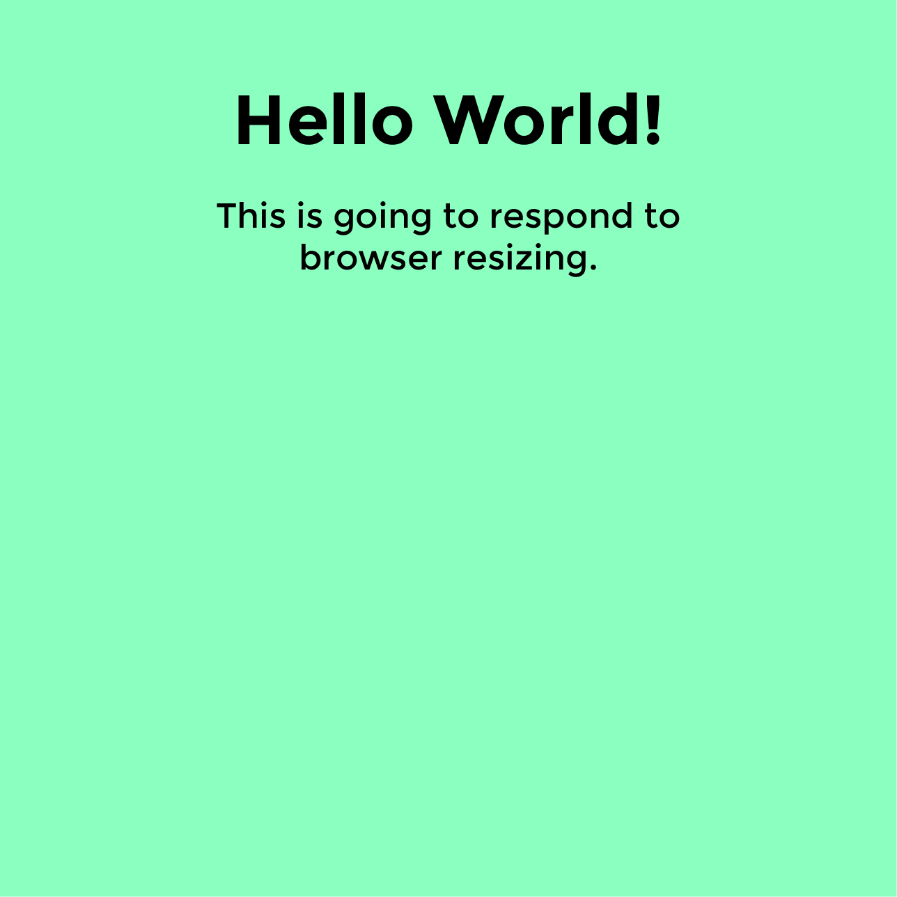
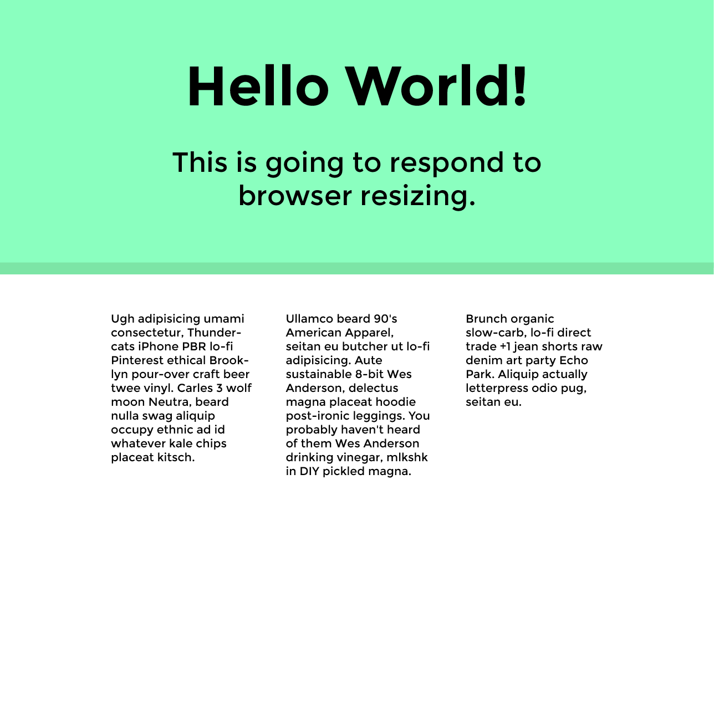
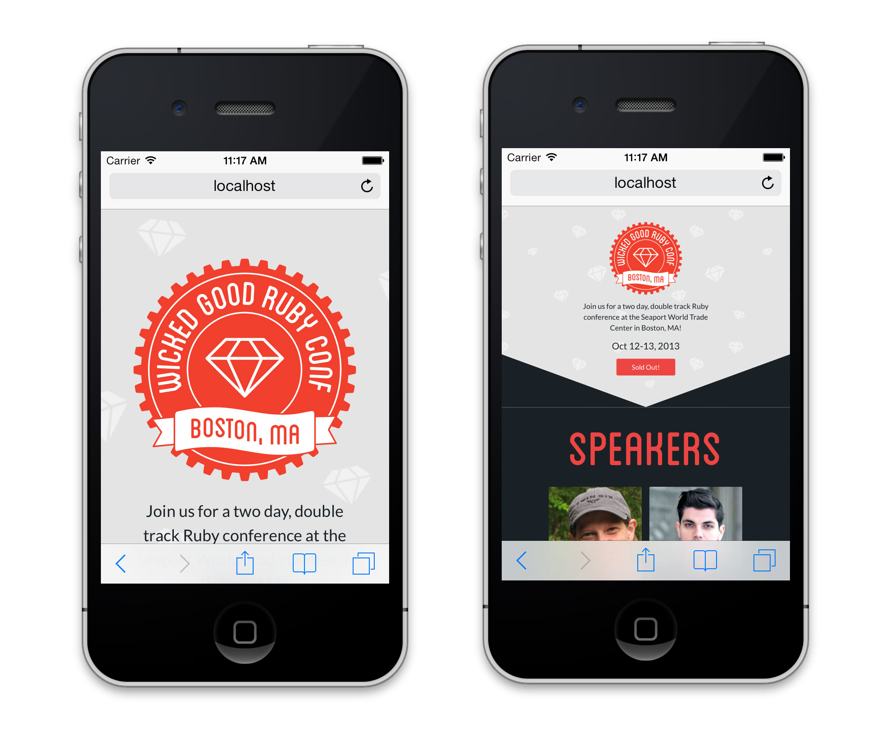
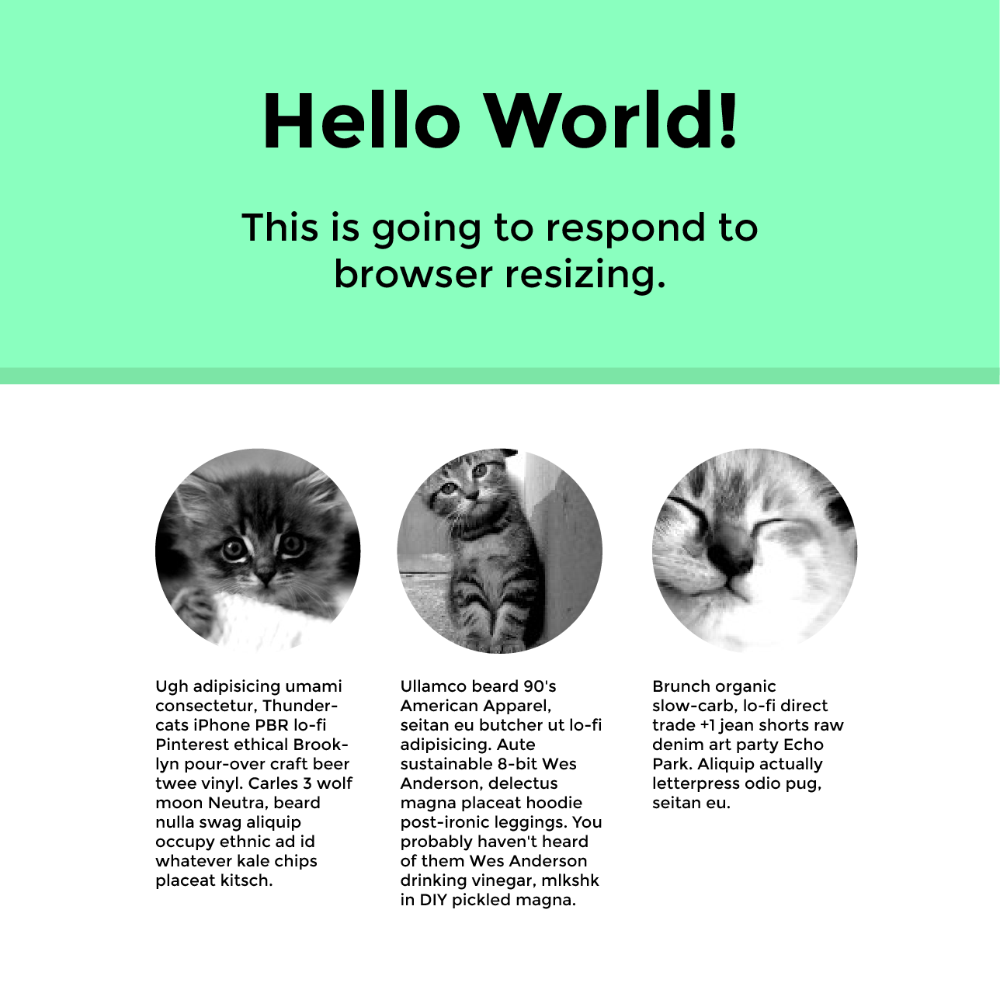

Testing
In the browser
On real devices (ifconfig/ipconfig if you're using a server, MAMP, WAMP)

Wikipedia says: Responsive web design (RWD) is a web design approach aimed at crafting sites to provide an optimal viewing experience—easy reading and navigation with a minimum of resizing, panning, and scrolling—across a wide range of devices (from mobile phones to desktop computer monitors)
Here is an example of one:
The Great DiscontentFixed: set width, styles do not change depending on resize, no media queries
Fluid: built using percentages, no media queries
Adaptive: media queries to target specific devices (mobile, tablet, desktop)
Native app: can work without an internet connection, higher quailty UX
Separate mobile site: created only for small screens, lighter and faster
Write the code once and have it functional and legible across many devices.
People are using a wide range of devices to complete their tasks now. Reading on mobile phones, shopping on tablets, etc.
What do they think about when implementing?
Play with the height and width of your browser to see what is happening
Did it make sense for the site to be built responsively?
"The first major, high-traffic, content-heavy website to adopt a responsive design" -Beaconfire Wire
Helped "raise public awareness of this flexible, standards-based, multi-platform and user-focused web design approach" -Jeffrey Zeldman
@media (min-width: 680px) and (max-width: 1020px) {
h1 {
font-size: 48px;
Styles go here…
}
}
These are identical:
@media all and (min-width: 500px) { … }
@media (min-width: 500px) { … }
Media types: all, print, screen and more
Media features: width, height, orientation and more
Hover (if the device is able to hover), luminosity (dim or bright environment?) and more
If you want to match perfectly, the font is Montserrat and the teal is #8affbf. Open up JS Bin and change the font sizes at different media queries.
Start mobile first
Move on to bigger widths slowly
Start mobile first
Move on to bigger widths slowly
Why mobile first?
Show more as we size up, not hide things when the screen gets more narrow. This is because mobile tends to have less bandwidth than devices with larger screen widthsCopy taken from Hipster Ipsum
Darker teal hex color: #7ce5a6
Why I don't use:
margin: 0 auto;
Instead use:
margin-left: auto;
margin-right: auto;
Padding versus setting a max-width
Read through your code and see if you could have implemented it in a cleaner way now. Now that you know one way to structure your CSS, are there other ways that would be easier to read?
In the browser
On real devices (ifconfig/ipconfig if you're using a server, MAMP, WAMP)
Did anything not appear how you wanted it to?
<meta content='width=device-width, minimum-scale=1.0, maximum-scale=1.0' name='viewport'>
Why we are seeing more flat design
Don't fight the web, work with it!
Do as much of the design through CSS as possible and if images are needed, they must be flexible
No hover states for touch screens, so don't hide content that can only be viewed by hover
RWD trends and patterns (background cover images, fixed headers, infinite scroll)
Retina support
Why SVG's are the best
Optimized for mobile to desktop
If used as background images, they don't need to be loaded at all screen sizes
Get started on this and we will finish it up next class.
Images from Place Kitten
Pay attention to what size images you are serving up.
We will revisit responsive images next class.